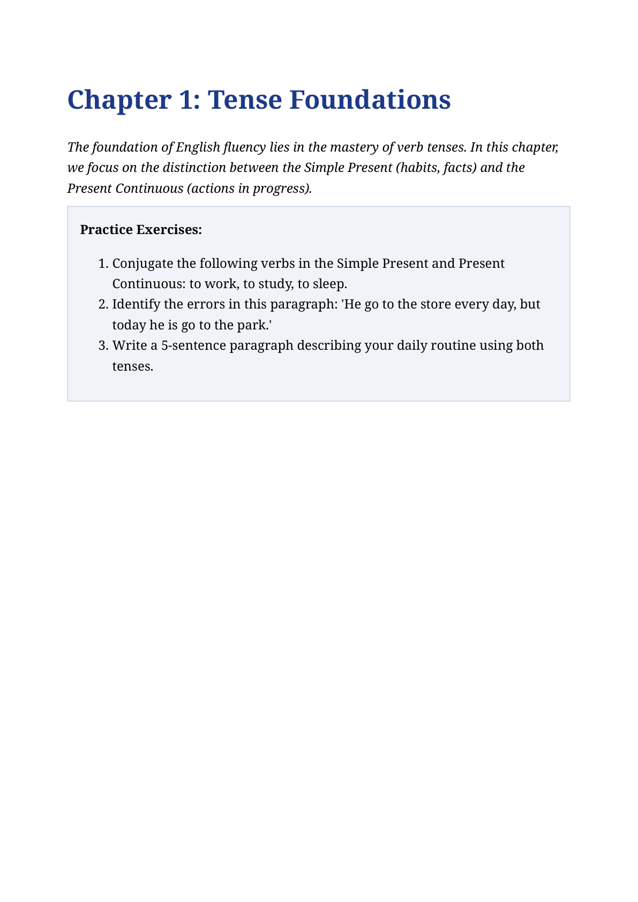
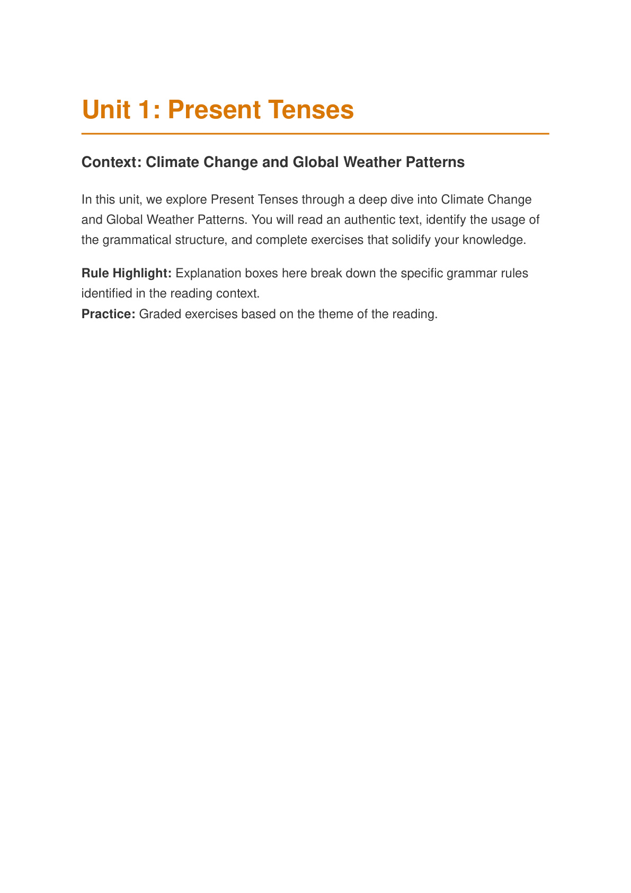
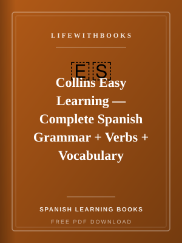
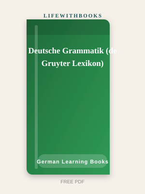
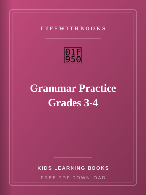
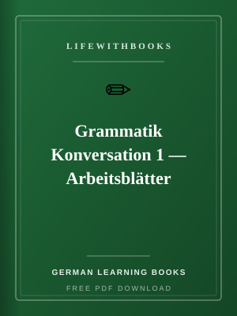
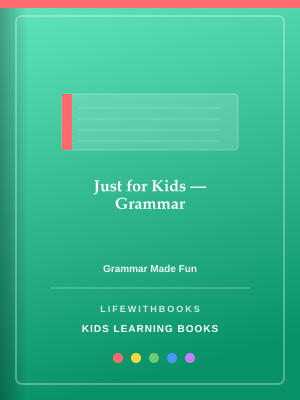
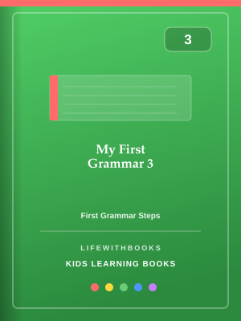

Free PDF

Fundamentals of English Grammar — Workbook
Original LifeWithBooks guide — The companion workbook to Betty Azar's classic grammar series, provid
Download FreeBrowse free books in Grammar Books on LifeWithBooks.

Original LifeWithBooks guide — The companion workbook to Betty Azar's classic grammar series, provid
Download Free
Original LifeWithBooks guide — Intermediate English grammar taught through engaging real-world conte
Download FreeOriginal LifeWithBooks guide — Michael Swan's authoritative A–Z reference covering over 600 points o
Download FreeOriginal LifeWithBooks guide — A focused workbook that systematically teaches English prepositions t
Download Free
One expert tip per day on French grammar, vocabulary, style and common mistakes — a year-long path t
Read More
Over 40 quick-reference grammar lists summarising essential German rules — verb conjugations, prepos
Read More
A focused grammar guide helping Spanish speakers master the English tense system by comparing it dir
Read More
A comprehensive, learner-friendly English grammar course covering all major topics from tenses and a
Read More
Collins' three-in-one Spanish reference combining comprehensive grammar, complete verb tables and th
Read More
A thorough, linguistically precise reference grammar of German from the academic publisher de Gruyte
Read More
One of the most widely used Spanish-language reference grammars of English, providing comprehensive
Read More
Age-appropriate grammar exercises for children in grades 3 and 4, covering parts of speech, sentence
Read More
Photocopiable worksheets that combine German grammar practice with conversation, turning structure d
Read More
A friendly, jargon-free guide to mastering grammar, punctuation, spelling and style for confident, c
Read More
A grammar workbook designed entirely with young learners in mind — simple explanations, familiar exa
Read More
A child-friendly and visual explanation of the four German grammatical cases (Nominativ, Akkusativ,
Read More
A classic French schoolbook covering grammar, spelling, vocabulary, comprehension and writing for in
Read More
The 100 most common errors in written and spoken French, clearly explained with the correct form, th
Read More
Matric English grammar topics — tenses, voice, narration, prepositions and essay basics for Pakistan
Read More
Friendly, age-appropriate grammar practice for children at the upper-elementary level, covering tens
Read More
Dedicated practice on two of the trickiest areas of French grammar — pronouns (y, en, le, la, les, l
Read More
James D. Williams' comprehensive introduction to English grammar for language teachers, blending tra
Read More